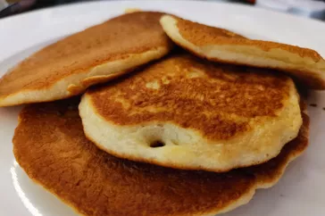

Pancakes are mostly admired by alot of people where ever they
find themselves, whether at PARTY Or ENGAGEMENT
Pancakes are tasty,lovely prepared with it sweet aroma
INGREDIENTS FOR THE RECIPES
- 2 Eggs ; large brown
- 1/2 cup Milk
- 2 tablespoon sugar
- 1 dash nutmeg
- 1 dash nutmeg
- 1 dash nutmeg
- 2 tablespoon Butter ; melted
STEPS
- Whisk flour, sugar, and nutmeg together set aside. Whisk milk, egg, vanilla, margarine and water together. Pour the
wet ingredients over the dry ingredients and mix together. If batter is too thick add additional tablespoon of water.
- Heat a pan over medium heat till a drop of water sizzles on contact.
Put a tiny bit of margarine or butter in a pan, wipe it off with a tissue.
-
Pour two tablespoons full of batter into pan. Take the pan and swirl the batter around it. Using a spatula, turn the pancake to cook on the other side.
Do same for the remaining batter. Dust with icing sugar and serve.